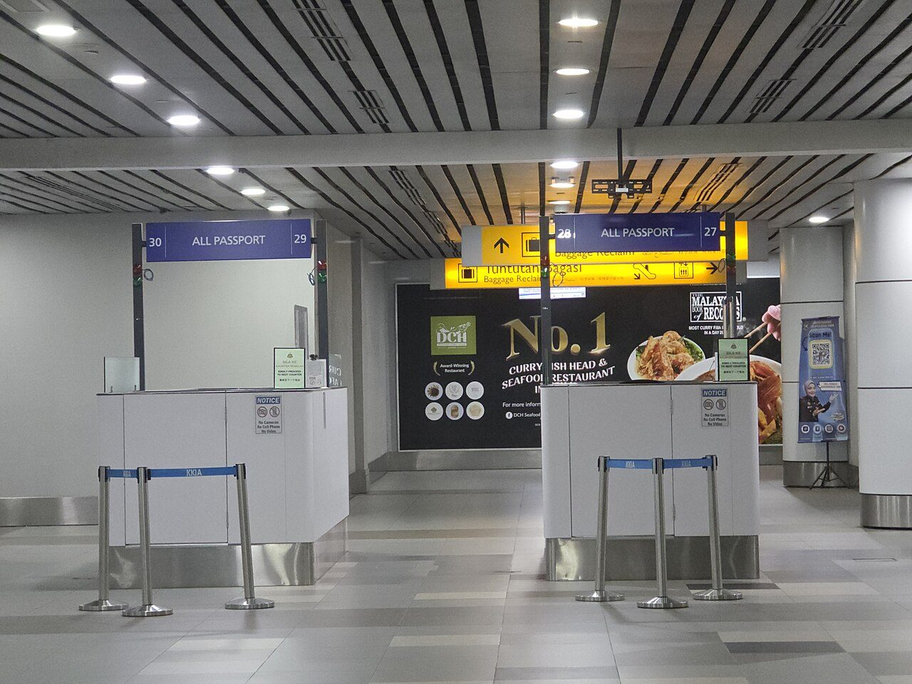
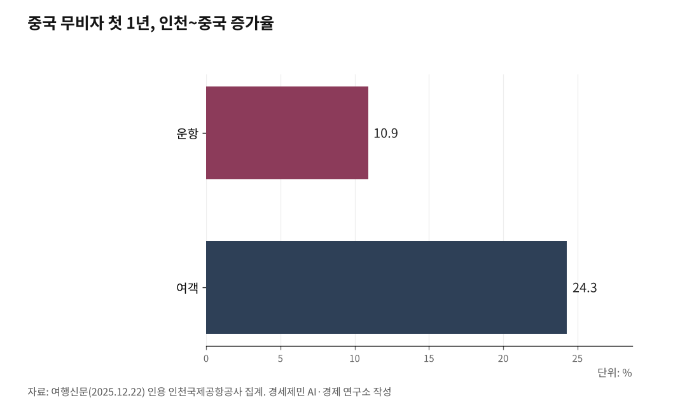

[세계3위 인천공항미래⑩] 사람을 부르는 열쇠, 비자면제다
운수권이 하늘길 자리를 열어도, 비자가 막히면 사람은 오지 않는다
한중 상호 무비자가 인천 여객을 되살렸다, 사장은 그 수도꼭지를 더 열어야 한다
AI경세제민=김갑봉 기자 | 운수권을 풀어 하늘길을 열어도, 비자가 막히면 그 길에 사람이 흐르지 않는다. 여객을 실제로 늘리는 수도꼭지는 비자다. 최근 한중 사이에서 그 사실이 수치로 드러났다.

여객의 수도꼭지는 비자다
화물은 운수권이 직접 레버다. 운수권이 열리면 그 길로 화물이 흐른다. 여객은 다르다. 자리가 열려도 비자가 막히면 사람이 오지 않는다. 그래서 여객 확대의 핵심 수단은 운수권이 아니라 비자면제다. 자유화가 자리를 열면, 비자면제가 그 자리에 사람을 채운다.

상호 무비자가 하늘길을 채웠다
한중이 서로 빗장을 풀었다. 중국은 2024년 11월부터 한국인에게 30일 무비자 입국을 열었고, 이 조치를 2026년 12월 31일까지 연장했다. 한국은 2025년 9월 29일부터 중국 단체관광객 무비자 입국을 한시로 허용했다. 서로 문을 열자 사람이 몰렸다.
수치가 말한다. 인천국제공항공사는 2025년 여객이 역대 최다인 7407만명이라고 밝히며, 중국 노선 여객이 1235만명으로 전년보다 22.6% 늘어 지역별 증가폭이 가장 컸다고 했다. 공사는 그 요인으로 중국의 한시 무비자 정책을 콕 집었다. 무비자 첫 1년만 따로 보면, 인천과 중국을 오간 운항이 10.9%, 여객이 24.3% 늘었다. 비자 하나를 풀었을 뿐인데 하늘길이 다시 찼다.
오가는 방향이 양쪽 다 늘었다. 무비자 뒤 항공사들은 중국 노선을 늘렸고, 대한항공은 2025년 10월 중국 노선 여객이 한 해 전보다 25.3% 늘었다. 나가는 사람과 들어오는 사람이 함께 불어나자 인천의 중국 노선이 두꺼워졌다. 운수권을 더 풀지 않고도 비자 하나로 기존 노선이 꽉 찼다.
문턱을 더 낮춘다, K-ETA 한시 면제
비자면제는 중국만의 일이 아니다. 법무부는 관광 활성화를 위해 전자여행허가(K-ETA, Korea Electronic Travel Authorization) 한시 면제를 미국과 일본, 타이완, 유럽, 호주 등 22개국에 적용해 2026년 12월 31일까지 연장했다. 입국 문턱을 낮춰 방한 수요를 넓히는 수단이다.
K-ETA는 비자 없이 올 수 있는 나라 국민이 입국 전에 온라인으로 여행허가를 받는 절차다. 한시 면제는 그 절차마저 없애 준다. 일본과 타이완처럼 방한 수요가 큰 시장을 면제 대상에 넣은 까닭이 여기 있다. 절차 하나가 관광객 발길을 돌리기도 하기 때문이다.
다만 이 면제도 해마다 기한을 늘리는 한시조치다. 문턱을 낮춰 사람을 부르는 효과가 뚜렷하다면, 주요 관광 시장에는 이를 상시로 두어 예측 가능하게 만드는 편이 낫다.
갈아타는 손님도 비자로 잡는다
환승객 무사증 입국이 2023년 5월 15일 되살아났다. 무료 환승투어와 유료 K-스탑오버가 여기 얹힌다. 환승객 무사증은 갈아타는 외국인이 짧게 입국해 도심을 둘러보고 다시 떠나게 하는 제도다. 인천에서 몇 시간, 길게는 하루 이틀을 머물며 면세와 식음, 관광에 지갑을 연다. 갈아타기만 하던 손님이 소비하는 손님으로 바뀐다.
그러나 아직 얕다. 인천연구원 분석을 보면 재개 뒤에도 환승관광 이용은 코로나 이전에 크게 못 미친다. 입국과 재출국 절차가 번거롭고 안내가 부족한 탓이다. 무사증으로 문은 열었으니, 그 문을 지나 도심으로 나가는 길을 공항이 매끄럽게 해야 한다. 환승은 강한 관문 위에서 두꺼워진다고 앞서 짚었는데, 그 환승을 부가가치로 바꾸는 열쇠도 무사증이다.
사장이 할 일
비자면제는 공사 권한 밖이다. 그러나 사장이 할 일은 분명하다. 첫째, 한시조치에 그친 무비자와 K-ETA 면제를 상시화하고 대상을 넓히라고 법무부와 문화체육관광부에 요구한다. 근거는 방금 본 수치다. 특히 무비자는 상호로 열 때 힘이 크다. 중국이 한국인에게 열고 한국이 중국인에게 열자 양방향이 함께 늘었듯, 주요 시장과 상호 비자면제를 넓히면 오가는 여객이 같이 는다. 둘째, 무사증 환승과 환승관광 절차를 공항이 정비한다. 출입국 전용 통로와 안내를 갖춰 갈아타는 손님이 도심으로 나가기 쉽게 한다. 셋째, 비자면제로 온 사람을 공항 부가가치로 잇는다. 면세와 상업, 환승관광으로 1인당 지출을 키운다.
운수권이 하늘길을 열면, 비자면제가 그 길에 사람을 채운다. 한중 상호 무비자가 이미 그 힘을 보여줬다. 다만 무비자는 안보와 불법체류 우려가 따르는 사안이라, 여행사 명단 사전제출 같은 관리장치를 함께 갖춰야 한다. 사장은 비자라는 수도꼭지를 더 열라고 정부에 요구하고, 그렇게 온 사람을 공항 안에서 부가가치로 붙잡아야 한다.
다음 글에서 여객이 아니라 화물을 짚는다. 항공자유화와 운수권이 반도체 수출길을 어떻게 넓히는지 본다.
이 글은 인천공항의 미래를 다루는 연재의 열 번째 글이다.
참고문헌
"인천공항 작년 운항·여객 실적 역대 최다…'中 무비자, 설·추석 효과'", 헤럴드경제, 2026.01.25. https://biz.heraldcorp.com/article/10662258 (인천국제공항공사 2026.1.25 발표. 2025년 여객 7407만1475명 역대 최다, 중국 노선 1235만6734명·22.6% 증가로 지역별 최대, 공사가 중국 한시 무비자 정책을 증가 요인으로 명시).
"무비자가 시장 흐름 바꿨다…중국여행 가파른 회복세", 여행신문, 2025.12.22. https://www.traveltimes.co.kr/news/articleView.html?idxno=414803 (인천공항-중국 무비자 첫 1년 운항 7만9055회·10.9% 증가·여객 1193만명·24.3% 증가, 대한항공 중국 노선 25.3% 증가). 게재 전 인천공항공사 원통계로 최종 대조.
법무부, "중국 단체관광객 무비자 입국 한시 시행"(2025.9.29~2026.6.30, 3인 이상 15일 체류, 여행사 명단 사전제출). 게재 전 원문 대조.
주한중국대사관·중국 국가이민관리국, "한국인 30일 무비자 입국"(2024.11 시행, 2026.12.31까지 연장). 게재 전 원문 대조.
법무부·외교부, "전자여행허가(K-ETA) 한시 면제 대상 22개국 연장"(2026.12.31까지). 게재 전 원문 대조.
법무부, "외국인 환승객 무사증 입국 재개"(인천공항 일반 환승객 2023.5.15 시행). 게재 전 원문 대조.
사진 출처
· [대표사진] Taufik, "Immigration arrival hall KKIA 20251208 054211.jpg", 위키미디어 공용, CC0, https://commons.wikimedia.org/wiki/File:Immigration_arrival_hall_KKIA_20251208_054211.jpg
※ 이 기사는 인공지능을 활용해 작성했습니다. 사실관계는 저자가 확인했습니다.
관련기사
- [세계3위 인천공항미래⑨] 인천공항 2033년 포화, 5단계는 지금 삽 떠야 한다
- [세계3위 인천공항미래⑪] 항공자유화가 화물을 늘린다, 실증된 지렛대다
- [세계3위 인천공항미래⑧] 강한 관문은 지방까지 닿아야 두꺼워진다, 연결망이 답이다
- [세계3위 인천공항미래⑫] SAF 2년 늦은 인천, 환적 118만톤이 샌다
저작권자 © AI경세제민 무단전재 및 재배포, AI학습 및 활용 금지